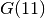

3.10. Summary
In this chapter, we used some statistics to compare different algorithms:
- time: This our main criteria. The faster the better!
- failures: How many times do we need to backtrack in the search tree? Many failures might be an indication that there exist better search strategies and/or models.
- branches: How many times do we need to branch? Faster algorithms tend to visit fewer branches and better models tend to have smaller search trees.
To compare these statistics, we introduced the Golomb Ruler Problem and presented 3 different models of this problem. Different models are solved differently by the solver, and choosing a good model can sometimes drastically speed up the search process. We saw how to test if the model given to the solver is indeed our intended model with the help of the DebugString() method and the use of some command line flags. We also saw how to break symmetries with constraints to make the search tree smaller and gain important improvements in the overall speed of the search algorithm. Finally, we saw how the Constraint Programming solver does to optimize a problem by adding some additional constraints every time it finds a feasible solution.
A final word about the Golomb Ruler Problem. Despite its simplicity and inherent symmetry, no one ever came with a clever algorithm. The best algorithms are not based on Constraint Programming. For instance, we need 35.679 seconds to solve  with our best tightened implementation of our third model. This doesn’t compare favorably with the state of the art (a few milliseconds on the same computer). Interested readers are invited to further read [SmithEtAl] to learn more about some modeling tricks for this beautiful but difficult problem.
Bibliography
| [SmithEtAl] | Barbara M. Smith, Kostas Stergiou and Toby Walsh. Modelling the Golomb Ruler Problem. Report 1999.12, School of computer studies, University of Leeds, 1999. |
Google or-tools |
User's Manual
Google search
Welcome
Tutorial examples
Current chapter
3. Using objectives in constraint programming: the Golomb ruler problem
Previous section
3.9. How does the solver optimize?